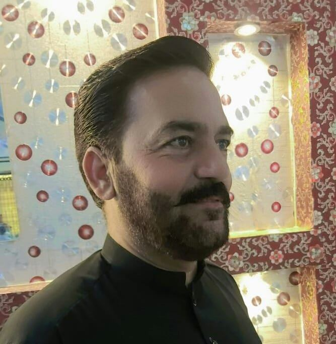

Resume:

Objective
As a web developer, my objective is to create user-friendly and efficient websites that are visually appending and esasy to navigatye.
I utilize my skills in HTML, CSS , JavaScript, and PHP to develop websites that meet all the requirements fo the client.Visit Our Site
Education:
| Degree |
Session |
Board/University |
| MS-LIS |
2019-2020 |
Sarhad University of Science and Information Technology Peshawar |
| MLISc |
2007-2008 |
University of Peshawar |
| BLISc |
2005-2006 |
University of Peshawar |
| B.S.C |
2003-2004 |
University of Peshawar |
| F.S.C |
2001-2002 |
B.I.S.E Peshawar |
| S.C.C |
1999-2000 |
B.I.S.E Peshawar |
Work Experience
• Working as Librarian (BPS-17) at Khyber Medical College Peshawar since 16th March, 2009 to date.
• Worked as Librarian at Khyber Group of Colleges Peshawar (24.10.2008-14.03.2009).
• Automated the whole collection and circulation record of the Staff Library of Khyber Medical College Peshawar.
Bio Data
Date of birth: 9th February 1984
Residential Address: House# CA-38, Lala Zar Gate, University of Peshawar
Permanent Address: Mohalla Babara, P/O Charsadda, District and tehsil Charsadda
C.N.I.C. No: 17101-2082900-7
Contact #: Cell # 00923459170059
E-mail Address: mukhtiaralikmc@gmail.com
Seminors/Workshop/Trainings Attended
• Attended Training Workshop on “PASTIC KOHA CLOUD” & “SYMPOSIUM ON PASTIC DEVELOPED TOOLS FOR EASY RESORCE SHARING MECHANISM IN PAKISTAN” jointly organized by Islamia College Peshawar & Pakistan Scientific and Technological Information Centre (PASTIC), on February 2-3, 2022.
• Served as Resource Person in One Day Training Workshop on “ACCESS & USE OF HEC DIGITAL LIBRARY RESOURCES” organized by the Department of Library & Information Science, Khyber Medical Peshawar, on 17 November, 2021.
• Participated in the training workshop on “STRENTHENING INNOVATIVE LIBARAY READERS” jointly organized by Central Library, University Peshawar & Pakistan Scientific & Technological Information Center (PASTIC) at Central Library, University of Peshawar from June 21, 2018 to June 22, 2018.
• Attended the First International Conference on “THE ROLE OF LIBRARY IN THE PROMOTION OF RESEARCH” organized by Sarhad University of Science and Information Technology, Peshawar in collaboration with Peshawar Universities Campus Librarians Association (PUCLA) at Baragali Summer Campus, University of Peshawar on 3rd -6th June, 2014.
• Participated in training workshop on “LIBRARY MANAGEMENT IN VIRTUAL ENVIRONMENT” organized by AHK National Centre for Rural Development Ministry of Professional and Technical Training Government of Pakistan, Islamabad from February 13, 2014 to February 17, 2014.
• Attended One Day Seminar on “USE OF HEC DIGITAL LIBRARY RESOURCES AND ONLINE SEARCHING TECHNIQUES” organized by Peshawar Universities Campus Librarians Association (PUCLA) at The University of Agriculture, Peshawar, Khyber Pakhtunkhwa, Pakistan, on 18th December, 2012.
• Participated in the training workshop on “ROLE OF ICT IN LIBRARY MANAGEMENT” organized by AHK National Centre For Rural Development Ministry of Professional and Technical Training Government of Pakistan, Islamabad from February 13, 2012 to February 17, 2012.
• Attended One-Week training course on “HARNESSING THE UNSTRUCTURED FREE FORM INFORMATION” organized by Pakistan Academy for Rural Development, Peshawar, Pakistan from March 07.2011 to March 12, 2011.
• Attended one day seminar entitled “ONLINE SEARCHING FOR ACADEMIC RESEARCH” at Islamia College Peshawar (18th March, 2010).
• Attended the Training Workshop on “INFORMATION TECHNOLGOY FOR INFORMATION MANAGEMENT IN MODERN LIBRARIES” at Central library University of Peshawar (January 5-7, 2010).
Languages Known